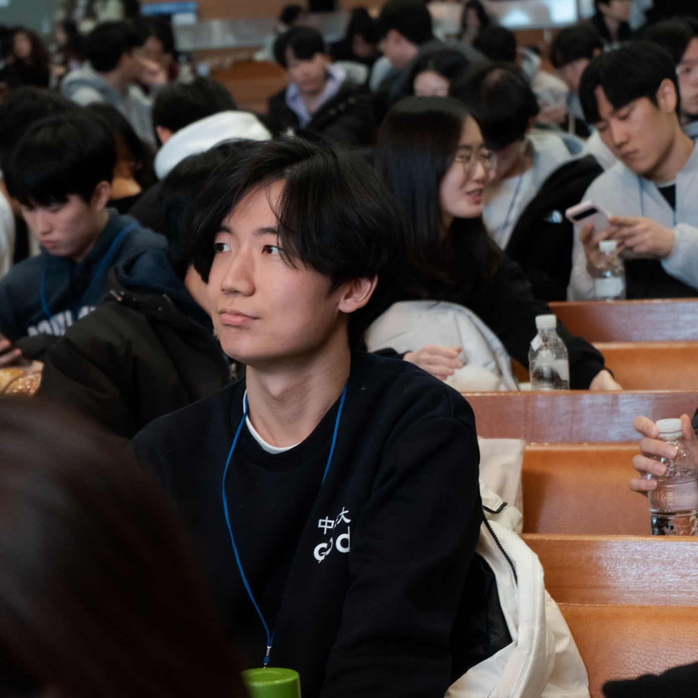

📁
스크롤 ↓
소개

JY안녕하세요! 저는 중앙대학교 심리학과 3학년에 재학 중인 최재엽입니다. 사람의 마음과 행동이 뇌에서 어떻게 비롯되는지 궁금해하며 공부하고 있습니다.
특히 neuroscience와 brain mapping 분야에 매료되어, 뇌의 구조와 기능을 이해하는 일에 관심을 두고 있습니다. '꾸준히 성장하는 개척자'라는 마음가짐으로 아직 가보지 않은 영역을 탐구해 나가고자 합니다.
- 전공 중앙대학교 심리학과 3학년
- 관심분야 Neuroscience · Brain Mapping
- 이메일 myjai132@gmail.com
기술 스택
제가 다루거나 배우고 있는 기술들입니다.
📊
SPSS
통계 분석과 가설 검정
🐍
Python
실험 데이터 처리와 분석 자동화
👁️
아이트래커
시선 추적 실험과 시선 데이터 분석
📑
Excel
데이터 정리·집계와 기초 분석
타임라인
대학 생활의 큰 줄기를 이루는 활동과 그 사이사이의 수상 이력을 하나의 흐름으로 담았습니다. 그 외의 활동은 오른쪽에 따로 정리했습니다.
🎯 주요 활동 · 수상
2022-2
🏆 제1차 연차사색대회 최우수팀 수상
'디지털 시대의 심리학(Psychology in the Digital Age)'을 주제로 한 중앙대학교 심리학과 학술 소모임 '사색' 주최 대회에서 최우수팀으로 선정되었습니다.
2022 겨울 ~ 2023.02
한국대학생심리학회 3.5기 수료
전국 대학생이 모인 한국대학생심리학회 3.5기에서 인지신경 분야 과정을 수료하며 관심 분야의 시야를 넓혔습니다.
2023-1
🏆 한국심리학회 학부생 포스터 부문 우수상
제77차 한국심리학회 연차학술대회 'AI시대, 다시 생각하는 Human Mind'에서 연구 책임자(제1저자)로서 연구를 주도하여 학부생 포스터 부문 우수상을 수상했습니다.
2023 1·2학기
학술 소모임 '사색' 차장
중앙대학교 심리학과 학술 소모임 '사색'의 차장으로 활동하며 학술 모임 운영을 이끌었습니다.
2023-2
'인지신경과학 연구 맛보기' 프로그램 진행
학술 소모임 '사색'이 주관한 '인지신경과학 연구 맛보기' 프로그램을 활동책임자로서 직접 기획하고 운영했습니다.
2023 겨울 ~ 2024.02
BCSC 5기 수료
뇌와 인지에 관심 있는 학부생들이 모인 학회 BCSC(Brain and Cognitive Science Community) 5기에서 '뇌인지 C조'로 활동하며 전공 역량과 시야를 넓혔습니다.
2024.07 ~ 2026.03
🪖 군 복무
대한민국 병역의 의무를 성실히 이행하는 한편, 복무 중에도 관심 분야 공부를 꾸준히 이어갔습니다.
복무 중 학습 내용 펼쳐보기 학습 내용 접기
- 인지신경과학 (Cognitive Neuroscience, 3rd Edition) 학습
-
MIT 9.13 The Human Brain (Spring 2019 · Nancy Kanwisher) 수강
— MIT OpenCourseWare(YouTube) 활용
강의를 들으며 직접 정리한 노트 (예시)
 노트 1
노트 1 노트 2
노트 2 노트 3
노트 3
그 외 · 맨큐의 경제학, 경제경영수학 길잡이(Fundamental Methods of Mathematical Economics) 학습
✨ 그 외 활동
2022
학생회 'BE:HIND' 홍보부 부장
중앙대학교 심리학과 학생회 'BE:HIND' 홍보부 부장을 맡아 학과 소식과 행사를 알렸습니다.
2023-1
밴드 소모임 'SPSS' 차장
중앙대학교 심리학과 밴드 소모임 'SPSS'의 차장으로서 회계·재무와 기획 보조 등을 맡아 동아리 운영을 도왔습니다.
2024
새내기 새로배움터 심리학과 기획단장
심리학과 새내기 새로배움터(새터)의 기획단장으로서 학과 프로그램 총기획과 예산 관리, 운영을 책임지며 신입생들의 첫 시작을 이끌었습니다.